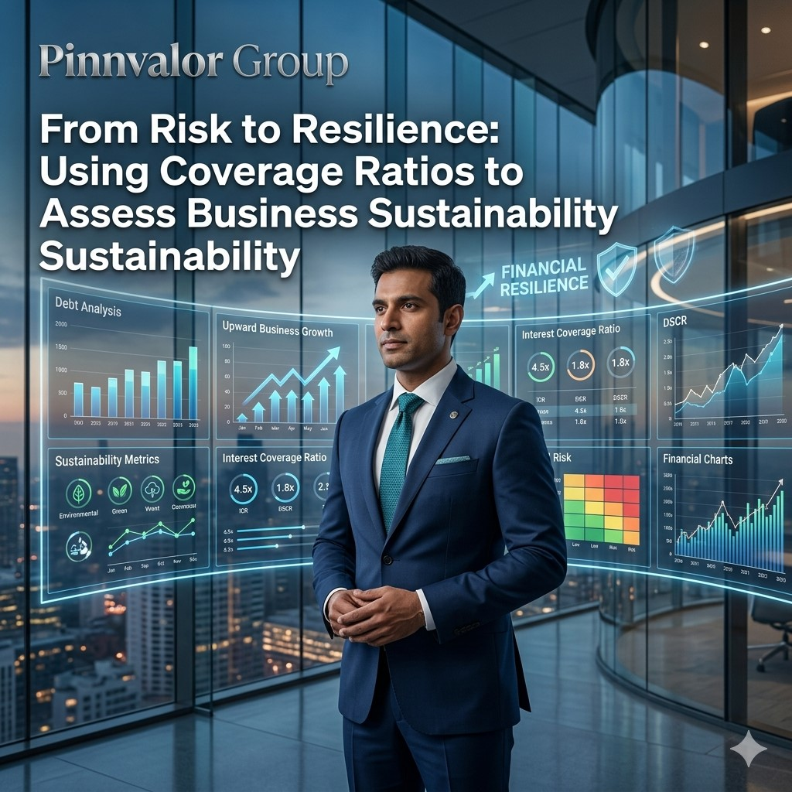

From Risk to Resilience: Using Coverage Ratios to Assess Business Sustainability
In today’s dynamic business environment, profitability alone is no longer enough to measure financial strength. Investors, lenders, analysts, and management teams increasingly focus on a company’s ability to sustain operations, manage debt obligations, and withstand economic uncertainty. This is where coverage ratios become essential.
Is your company building sustainable growth — or simply surviving on leverage?
Profitability may drive expansion, but strong coverage ratios protect businesses during uncertainty. From risk management to long-term resilience, financial sustainability begins with disciplined debt management.
Coverage ratios provide deep insights into whether a business generates sufficient earnings and cash flows to meet its financial commitments. They help stakeholders evaluate solvency, financial stability, operational resilience, and long-term sustainability.
From startups seeking funding to large enterprises managing leverage, understanding coverage ratios is critical for strategic financial decision-making.
What Are Coverage Ratios?
Coverage ratios are financial metrics used to determine a company’s ability to service its debt and fixed financial obligations using operating profits or cash flows.
These ratios assess:
Higher coverage ratios generally indicate stronger financial health and lower default risk, while lower ratios may signal liquidity pressure or excessive leverage.
Why Coverage Ratios Matter in Business Sustainability
Business sustainability is not only about increasing revenue and profitability. It is also about maintaining operational continuity, managing financial risks effectively, and surviving economic downturns.
Coverage ratios help businesses:
A company with strong coverage ratios demonstrates resilience because it can absorb financial shocks without compromising operational stability.
Key Coverage Ratios Every Business Should Monitor
1. Interest Coverage Ratio (ICR)
The Interest Coverage Ratio measures how comfortably a company can pay interest expenses using its operating earnings.
Formula:
Interest Coverage Ratio = EBIT / Interest Expense
Where:
Example:
If a company has:
Then:
Interest Coverage Ratio = 50,00,000 / 10,00,000 = 5x
This means the company earns five times more than its interest obligations.
Interpretation:
Business Insight:
A declining Interest Coverage Ratio may indicate:
2. Debt Service Coverage Ratio (DSCR)
The Debt Service Coverage Ratio evaluates a company’s ability to meet both interest and principal repayments using operating income.
Formula:
DSCR = Net Operating Income / Total Debt Service
Where:
Example:
Suppose:
Then:
DSCR = 1,20,00,000 / 80,00,000 = 1.5x
This indicates the business generates 1.5 times the cash required to service debt obligations.
Interpretation:
Business Insight:
Banks and financial institutions heavily rely on DSCR before approving loans because it reflects the actual repayment strength of a business.
3. Fixed Charge Coverage Ratio (FCCR)
This ratio evaluates the ability to cover fixed obligations beyond interest expenses, such as lease payments and fixed financial commitments.
Formula:
FCCR = (EBIT + Fixed Charges Before Tax) / (Interest + Fixed Charges)
Importance:
4. Cash Coverage Ratio
The Cash Coverage Ratio focuses on actual liquidity by considering cash earnings rather than accounting profits.
Formula:
Cash Coverage Ratio = (EBIT + Depreciation) / Interest Expense
Importance:
How Investors and Lenders Use Coverage Ratios
For Investors
Investors analyze coverage ratios to understand:
Strong coverage ratios often indicate disciplined financial management and lower financial distress risk.
For Banks and Lenders
Lenders use coverage ratios to evaluate:
A weak DSCR or interest coverage ratio may result in:

Industry-Specific Importance of Coverage Ratios
Manufacturing
Manufacturing companies often carry substantial debt for machinery and expansion projects. Coverage ratios help evaluate operational sustainability and repayment capability.
Real Estate
Real estate businesses heavily depend on DSCR because projects are largely debt-funded.
Infrastructure & Energy
Coverage ratios are critical due to long-term financing structures and large capital expenditures.
Technology Startups
Even high-growth startups must monitor coverage ratios when scaling operations through external funding.
Red Flags Identified Through Coverage Ratios
Coverage ratios can expose early warning signs of financial distress:
Businesses that ignore deteriorating coverage ratios often face:
Strategies to Improve Coverage Ratios
1. Improve Operational Profitability
2. Reduce Debt Burden
3. Strengthen Cash Flow Management
4. Refinance Existing Debt
5. Focus on Sustainable Growth
The Role of MIS and Financial Analytics in Monitoring Coverage Ratios
Modern businesses increasingly rely on Management Information Systems (MIS), financial dashboards, and predictive analytics to monitor coverage ratios in real time.
Advanced MIS solutions help organizations:
Real-time monitoring enables management to take corrective actions before solvency issues escalate into financial crises.
Coverage Ratios and Long-Term Business Resilience
Financial resilience is built through disciplined capital management, sustainable profitability, and effective risk control. Coverage ratios act as powerful indicators of whether a company can withstand economic pressure while continuing to grow responsibly.
Organizations with healthy coverage ratios are better positioned to:
In an increasingly uncertain global economy, coverage ratios are no longer just accounting metrics — they are strategic tools for survival, resilience, and sustainable success.
Conclusion
Coverage ratios provide a critical lens into a company’s financial strength, solvency, and sustainability. Whether it is the Interest Coverage Ratio, DSCR, Fixed Charge Coverage Ratio, or Cash Coverage Ratio, these metrics help businesses and stakeholders evaluate the ability to meet financial obligations without compromising growth.
For management teams, strong coverage ratios reflect disciplined financial leadership. For investors and lenders, they signal confidence and lower risk exposure. Most importantly, for businesses navigating volatile markets, coverage ratios serve as a roadmap from financial risk to long-term resilience.
In the modern financial landscape, sustainable success belongs not only to businesses that generate profits — but to those that can consistently sustain and protect them.